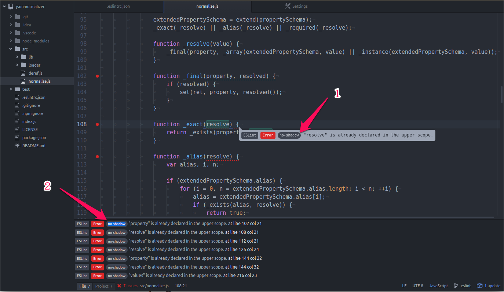

意象說明
筆記、筆記、再筆記
使用 Atom 編輯器，安裝上 linter-eslint 外掛，再加上一個現成的 ESLint 範本，就可以無痛投入到 ESLint 的懷抱了。
轉移到 ESLint
老實說，很慶幸我恰巧選擇了使用 Atom 編輯器，及 linter-eslint package 外掛來進行轉換工作，整個過程輕鬆愉快，一個晚上，就把所有的專案都移轉到 ESLint 下了。(其實不一定要 Atom，任何可以支援 linter-eslint 的編輯器都可以。)
我的作法如下：
安裝 Atom
安裝後，執行起來。-
- 點選 Edit / Preferences 選單，
- 點選 Install 標籤，
- 在 Search packages 輸入框中輸入
linter-eslint， - 按下右邊的 Package 按鈕，
- 找到之後，按下 Install 按鈕。它會自動安裝相依的 linter 模組，
- 重新啟動 Atom。
找一個現成的規則檔做為起點
最好是包含完整規則的範本，譬如這個，直接放到專案根目錄下，就可以開始移轉了。修正錯誤
打開專案目錄，開啟程式碼，根據發生的錯誤，依自己的喜好，或所屬公司、組織的標準， 決定處理方式：- 關閉規則
- 調整規則
- 修正程式碼
修正所有的專案
- 針對每個專案，複製上個步驟所修正的最新規則檔，重複步驟 4。
- 將最後完成的專案的規則檔，複製到所有修正過的專案下，重複步驟 4，確認這個規則檔適用於所有的專案。若不適用於所有的專案，則可以考慮在個別專案 source 目錄下，另增一個只適用於個別專案的規則檔，或是只針對特定檔案以 directives 的形式設定。
把最終的規則檔，放到範本專案中，讓未來的新專案可以一體適用。
借助 linter-eslint 查詢錯誤規則
linter-eslint 其實是 linter 的 plugin，而 linter 的界面做的相當好：

在編輯器中直接強調錯誤的程式碼，以及違反的規則名稱
到底是那一段程式碼發生錯誤，以及違反了那一條規則，一目了然。在下方的錯誤列表中，可以使用滑鼠圈選文字的方式，複製錯誤規則名稱
如果懶的自己打規則名稱，或者怕打錯，還可以直接複製，然後到網站上查詢。
這一點是我覺得 ESLint 這麼好用的最重要原因。所有的規則，一一對應，沒有模糊不清的地方。你只要根據規則名稱，到 Rules 搜尋一下，就可以找到對應的說明，然後就可以判斷自己要不要遵守這條規則，或是根據自己的喜好或習慣，開關或調整規則的選項。
ESLint 超簡單入門
ESLint 完全可以自行決定是否套用特定規則，以及套用到何種程度。
1. 配置規則可以使用下列各種方式：
直接以 directives 的形式寫在檔案中。只對該檔案生效，並且覆蓋其他方式的配置。同時
以
.eslintrc.*檔案的方式獨立配置。對該目錄及所有子目錄的檔案生效；每個子目錄都可以有自己的.eslintrc.*檔案配置，並且覆蓋其父目錄的配置。注意，繼承規則時，會一路往磁碟的根目錄查詢規則，任何目錄若不想繼承其父目錄的規則，可以使用"root": true加以阻絕。最後如果是以 npm 管理模組，可以直接在
pacakge.json中的 “eslintConfig” 區段直接配置。(以重複使用的角度，我個人不建議使用這種方式。)
2. 支援 ES2015 及 JSX 語法規則
可以在規則檔中以 “ecmaFeatures” 區塊，指定要套用那些語法規則。(文件中沒有提到如何以 directives 的方式在檔案中指定。不過我想最好還是整個專案採用一致的標準會比較好。)
3. 指定可執行環境
以 /* eslint-env node, mocha */ 或在配置檔中以 “env” 區塊指定模組或應用程式的可執行環境，譬如 browser, es6, node, amd, mocha 及 jasmine 等。ESLint 將假設這些環境的 global 變數的存在，而不會報告錯誤：『使用未定義的變數』。譬如：
1 | { |
4. 自行指定既存的 global 變數
如果某些程式庫仍使用 global 變數的方式匯出功能，則必須以 /* global angular, bootstrap */ (注意沒有 s，這是為了與 JSLint/JSHit 相容。其實我是覺得可以 globals 和 global 兩種都支援)。或在配置檔中以 “globals” 區塊加以指定，以免報告錯誤。譬如：
1 | { |
其中 true 代表該 global 變數可以被覆寫。
5. 支援外掛
外掛必須先以 npm 安裝，然後以 “plugins” 區塊指定要使用的外掛名稱，外掛名稱如果以 eslint-plugin- 開頭，最好省略不寫 eslint-plugin- 前置名稱 (配置外掛選項時會用到)。譬如：
1 | { |
6. 可以關閉或調整規則
規則的 directives 格式完整形式如下：
1 | / eslint rule-name: [severity, options …], “plugin-name/rule-name”: [severity, options …] / |
若以規則檔指定，則以 “rules” 區指定規則。規則的 JSON 格式完整形式如下：
1 | “rule-name”: [severity, options …], |
其中 severity 的值可以是下列三個：
| 值 | 說明 |
|---|---|
| 0 | 關閉 |
| 1 | 警告 |
| 2 | 錯誤 |
而 options 的部份，則每一條規則不同，需要查文件。若不需要指定 options 部份，則可以省略 [] 括號。
如果使用的外掛需要調整設定，則必須以 "plugin-name/rule-name" 的形式指定。注意，這時候不能指定 eslint-plugin- 前置名稱。
譬如：
directives
1 | / eslint “plugin1/rule1”: 2, “plugin2/rule1”: [1, “always”] / |
.eslintrc.json
1 | { |
7. 可以使用擴展的方式重複使用設定檔
為了確保設定檔只有一份，而不是散落在各個專案中，可以利用 “extends” 區塊，指定規則檔，然後再加以補正。譬如說，可以有一個模組，實際上不含任何功能，唯一的目的就是提供 .eslintrc.* 檔案供其他專案引用：
1 | { |
由上面例子也可以看到，ESLint 允許在 JSON 檔案中撰寫註解 (雖然標準的 JSON 不允許，譬如 package.json)。
結論
利用上述的方式套用範本，只需要針對衝突的規則加以處理，調整到最適合自己的方式，一點都不難。還不快投入 ESLint 的懷抱！
想參考我的 Open Source 專案 (符合 ECMAScript 5，未使用 ES2015 的語法) 的 .eslintrc.json 做為起點的朋友，請自行取用。
歡迎大家的回饋與心得分享。